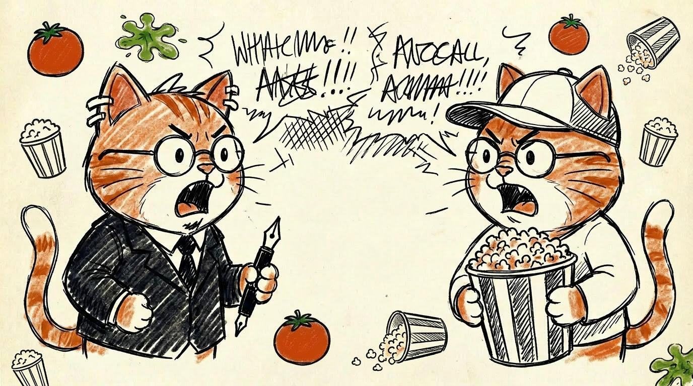

発端
ナゾロジーでこんな記事を読んだ。映画批評の研究で「失敗の前兆者」と呼ばれるレビュワー群の話。分析的・形式的な文体、1人称の少なさ、大衆軽視、自分の批評能力への過信 ── この特性を持つ人が高評価した映画は興行でこける。しかも素人だけでなく一流の映画評論家にも広く存在する。
読み終わってこう思った。
プロファイリングできそう、思考のパターンを
主観で語らない
副詞が多い
他者への共感が欠ける、自閉傾向がある、あたり？
この時点では「ASD 傾向」という予測をしただけ。Claude に渡して同じ結論に辿り着くか興味がわいた。
逆予言者をプロファイリングしてもらう
「ASD」という単語を入れるとその言葉に引っ張られるので、ただ記事の一部を見せ、この逆予言者たちの精神特性を推測してみて、と頼んだ。
Claude は 「感情が強いほど文体が硬直する」 という点に注目した。高評価で副詞が増えるのは感動を直接言えず修飾語で包む回路、低評価で逆に分析的になるのは感情を論理で覆い隠す防衛。知性化、脆弱型ナルシシズム、アレキシサイミア、そして高機能自閉スペクトラムが並び、一言でいえば「知性化する脆弱型ナルシストで ASD 認知スタイル」と回答した。
orange：
やっぱ高機能ASD系よねこれ
逆予言者をプロファイリングできても説明にはならないな・・・
orange：
（ASD傾向に）一致するだけなら逆予言率高いって接続にならないじゃん？
そこがいま不思議
ASD 認知スタイルと特性の一致は「大衆と無相関（関係ない）」の説明にしかならない。ここで問題になっているのは 負の相関（逆になってる） で、単に参照しないだけなら逆預言率は上がらない。Claude は審美軸の対立仮説を返すが、「綺麗に反転する説明としては弱い」と自分でも認めていた。一段足りてない。
プロファイリングした人々は、ルールに従うことを好む特性があることを思い出す
orange：
ASDタイプってあれだっけ時刻表通りの電車とか好む傾向だっけ？
例外なくルールに従う、完全に予測可能、感情的ノイズがゼロ ── この「裏切らないシステム」への親和性は ASD の典型例。
orange：
じゃあそれかな
一般人は何も起きないルーチンって大嫌いだから
- 定型は「何か起きること」自体に快感回路がある ── 予測の裏切り、カタルシス
- ASD 系は「完璧に予測通り動くこと」に快感回路がある ── 整合性、精度、構造
快感の発生源が構造的に裏返っている。だから無相関ではなく負の相関になる。単に参照しないのではなく、喜ぶポイントが逆。感情で論理の穴を塗りつぶせる映画が大衆にウケる構造がある以上、ASD 審美軸とは対立せざるを得ない。
逆予言者たちの審美ルールは、集束しているのかもしれない
orange：
（批評が）高精度なのは彼らが高機能なので詳細に分析するから
そしてそれが彼らの内部の理論に精緻に合致するから ってことかしら
それぞれが各々の審美眼で批評するがそれぞれが対置……いや待てよ。撮り鉄が美しい構図を共有して同じ写真を撮るために犯罪すら冒すことを考えると、（各映画ジャンル）界隈レベルでは合致してるかもだなしかも強固に
これで二段構造が見えた。個人内では高機能ゆえ分析が精緻、自分の内部理論との合致を高精度で測れる。界隈内では ASD 的認知スタイル同士がロジックで合意するため、定型集団の社会的参照ベースの収束より確信強度が段違いに強い。「大衆は分かってない」という共通認識が結束をさらに固める。
逆予言者の仕組みの仮説はこうなった
内部理論が高精度かつ界隈内で強固に収束していて、その理論が大衆の快感回路と構造的に対立している
評論家が「失敗の前兆者」となれるのは偶然ではない。批評能力の卓越性は、大衆快感回路との対立と同じ認知スタイルから供給されている。批評が上手くなるほど外す方向に寄る、という皮肉な逆説が構造的に発生する。
このような仮説に落ち着いたのでスッキリした。